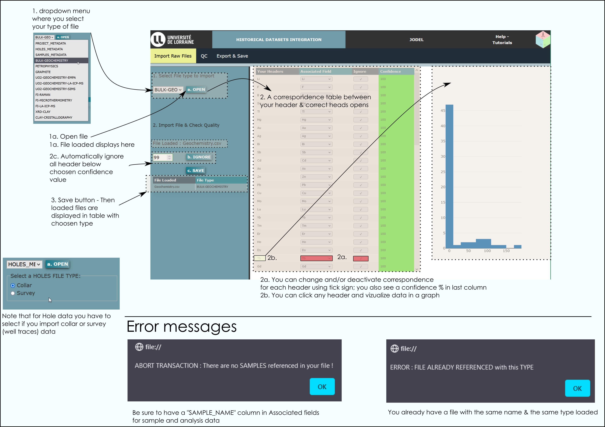
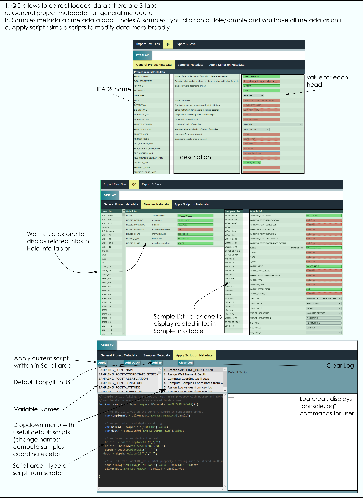
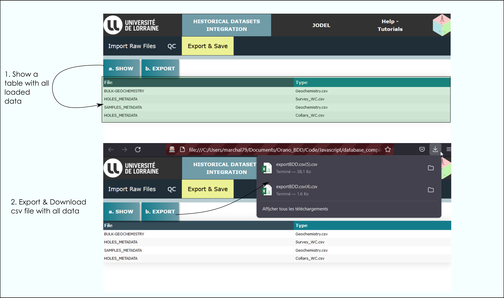
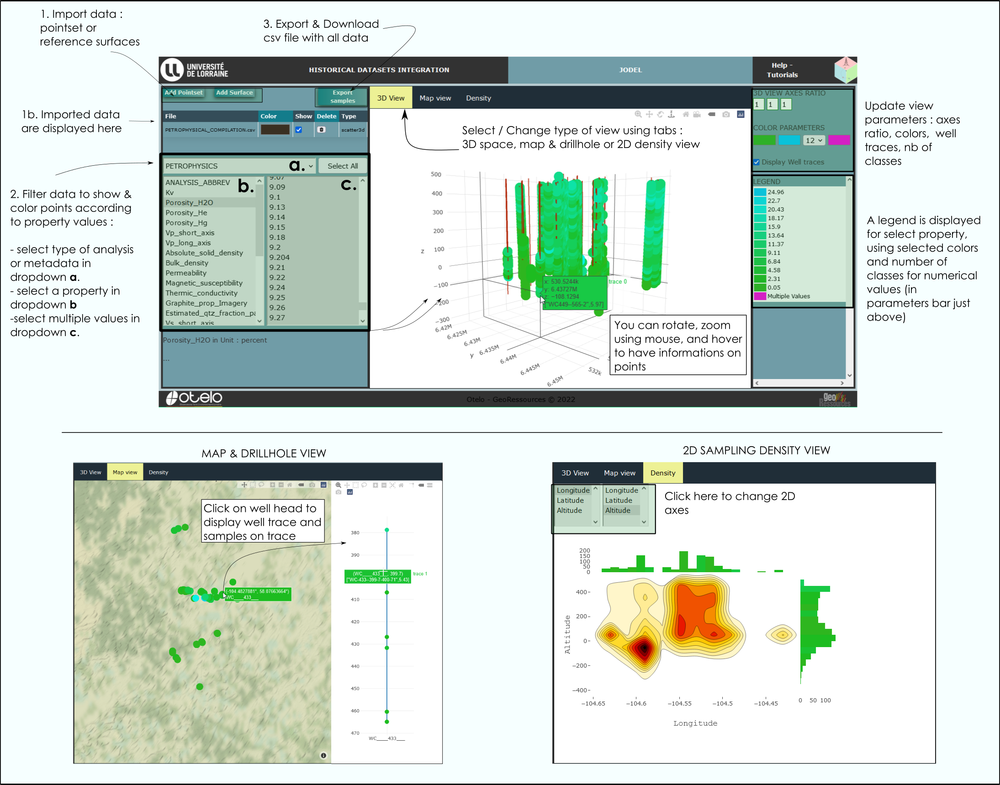

Data integration using Historical Integration Page
- Import Data

Check out Video Help on BDD Import.
- Quality Check

Check out Video Help on BDD QC .
- Export & Save

Check out Video Help on BDD Export.
Data vizualization using JODEL Page

Check out Video Help on JODEL.